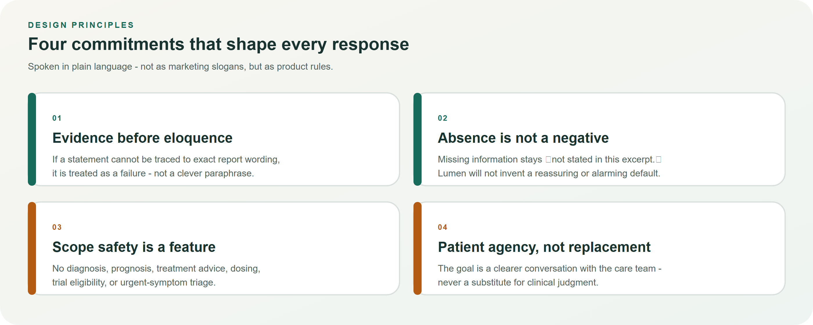
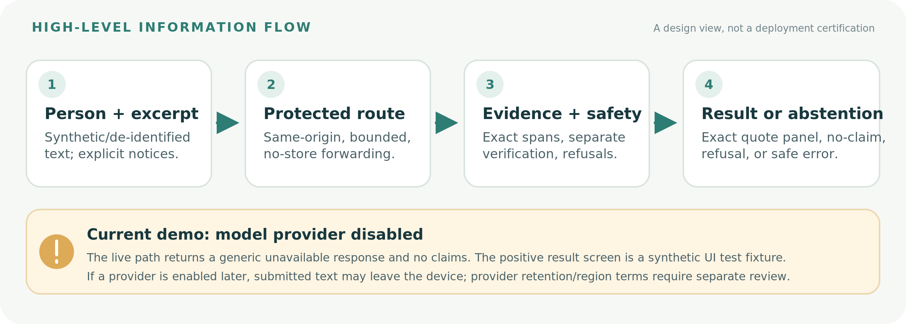
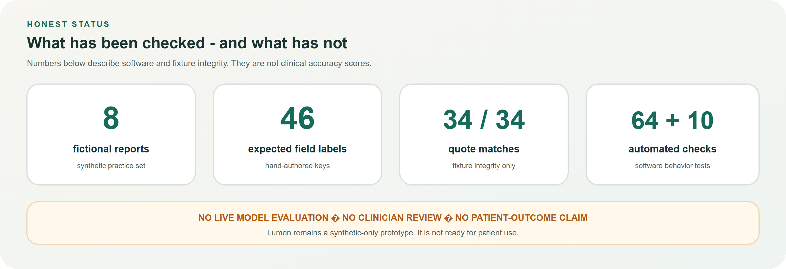

Lumen: helping people prepare for clearer care-team conversations
A cautious, source-grounded prototype for explaining cancer pathology-report wording — designed to show where every statement came from, keep quiet when evidence is missing, and never pretend to be a clinician.
Non-negotiable disclosure: Lumen is a synthetic-only, English-only software prototype — not medical advice, not a diagnostic product, and not clinically validated. Confirm every meaning with a care team.
◉ Lumen
Problem & value
The human problem
People may see pathology wording through portals or on paper before a clinician has explained it. Reports use specialist language. Access alone does not create understanding. The result can be confusion, unnecessary worry, or a quieter appointment than the person hoped for.
“Help me understand what this document says, show me where each explanation came from, and help me ask useful questions — without telling me what my diagnosis or treatment should be.”
Figure 2. From early report access to a carefully bounded briefing.
Who Lumen is for
Intended
Adults preparing for a care-team appointment after a cancer-related report; caregivers supporting with consent; people who need clearer wording and better questions.
Not intended
Children, emergency care, clinical decision-making, unsupervised treatment interpretation, or any use of identifiable patient information in this prototype.
What “good” looks like
A person can inspect exact source wording for each shown statement.
Missing facts remain visibly “not stated,” not silently filled in.
The appointment still belongs to the clinician — Lumen only helps prepare.
◉ Lumen
Principles & boundaries
Design principles

Figure 3. Four commitments that govern product behavior.
Scope safety is a feature
Lumen’s value is as much about what it refuses as what it explains. The product stays useful by staying narrow.
Figure 4. Inside the boundary versus outside the boundary.
Operating language: Lumen explains report wording; it is not medical advice. It does not diagnose, predict outcomes, or recommend treatment. Confirm meaning with your care team.
◉ Lumen
How it works
A simple information journey
In everyday terms: a person submits an excerpt with explicit acknowledgements; the service applies evidence and safety checks; the interface either shows source-linked wording and questions, or withholds claims and explains why.

Figure 5. High-level flow with the current demo disclosure.
The evidence gate
Every statement that appears must earn its place. Exact source wording, verification, and safety limits decide whether content is shown, withheld, or refused.
Figure 6. Supported path versus withheld or refused outcomes.
If this happens…
Lumen’s response
Wording is present and supported
Show a plain-language statement with an exact quote control
A field is missing from the excerpt
Mark it “not stated” — do not invent a value
Request asks for prognosis or treatment advice
Return a fixed refusal and point back to the care team
Evidence cannot be verified
Fail closed: no unsupported claims are displayed
◉ Lumen
Trust, status & next steps
What has been verified — carefully phrased
The figures below describe software discipline and fixture integrity. They are not model accuracy scores and not clinical outcome results.

Figure 7. Honest status snapshot for stakeholder review.
Live model quality; clinician-labeled evaluation; patient-outcome benefit; multi-language support; PDF/image intake; deployment privacy certification.
Recommended next steps
Independent clinician and patient review of task framing, safety language, and examples.
Human-labeled evaluation protocol before any accuracy narrative is used externally.
Privacy, security, accessibility, and deployment review if a controlled pilot is ever considered.
Keep every public demo disclosure-first: synthetic data, provider status, and “not medical advice.”
Closing line for stakeholders: Lumen aims to make pathology wording discussable — not decidable. The care team remains the authority. Until clinical validation exists, treat Lumen as a carefully bounded software prototype only.
Contact posture for demos: Use synthetic excerpts only. Label fixture screens as synthetic UI demos. Do not present disabled-provider failures as successful model answers.